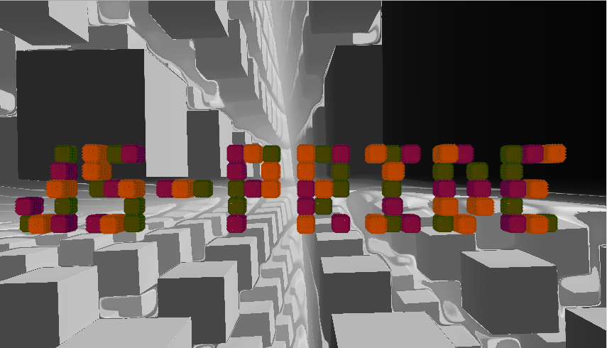
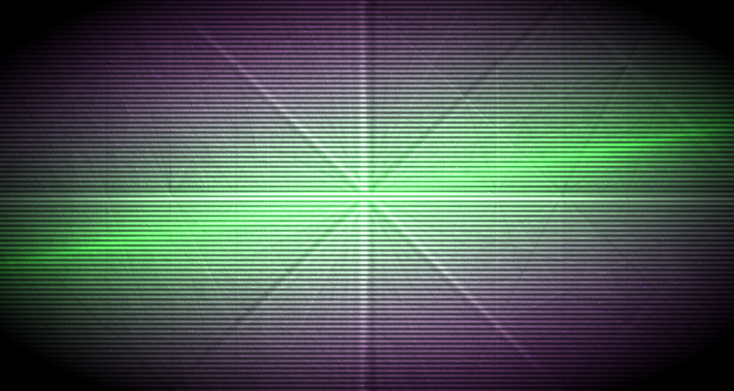
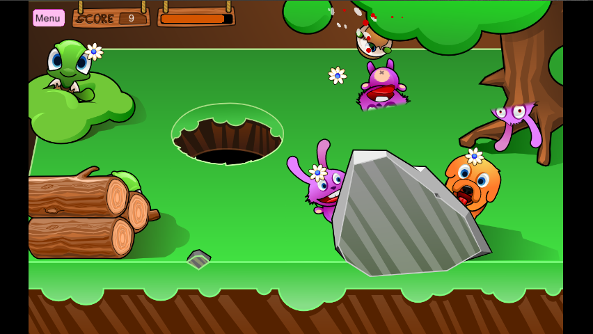
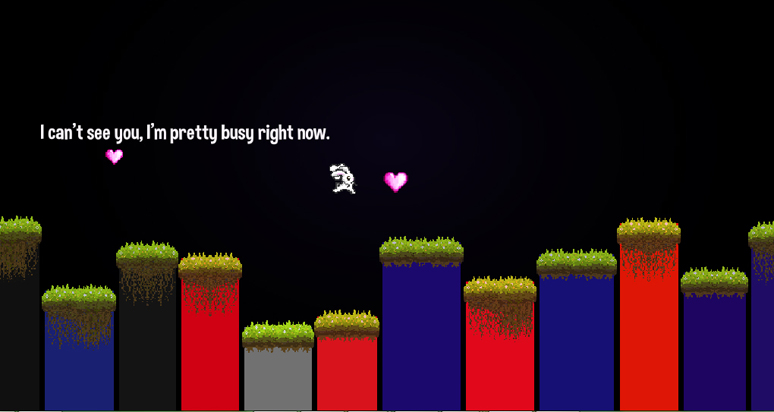
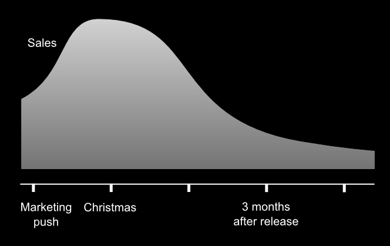

Console and Web convergence
Web & console legacy
Content creation pipelines
Wait! Who's this guy?
Engine developer
Casual on console!




You said collision?
Not only multiplayer gameplay
Leaderboards, achievements (e.g XBLA)
Analytics
Social!
XB1 attempt at always connected
Flash games
Facebook games
HTML5 ports of big engine (e.g Unreal, Unity)
Model by Volumic @ Sketchfab
But why?
In line with Internet base principles
Not free, not used (more or less)
Service-oriented
Buy storage or bandwidth, not code
Hosting is accessible
Fast iteration time
F5 updates your software
Continuous integration/deployment
Lots of tests
Hard to be profitable from the start
Usually start small, then grow
Increased need for visible, immediate value
Side effect: encouraged accessibility and ergonomy
Most of web tools are code-based (html, css, js, etc.)
Realm of designer-coders
Few artists, in proportion
Nothing open source
Open source is forbidden
Expensive (e.g some devkits cost $20000)
Certification process
Burn and forget (> 50% console market)
But you can update! Yeah, well...
Not all platforms (Wii)
Still heavy and expensive process
Side effect: bad code at end of production
You got only one try!

Developers only support production
Few of them compared to artists (~10%)
Most tools usable by artists (no code required)
Data-driven engines
Artists, GPP, engine, tools
morph to off-the-shelf toolchain
Production deployment -> use more reliable processes
Improve ergonomy of internal tools
Simple things: e.g use URIs for everything
Emscripten + asm.js
Duetto
(NaCl)
THREE.js + tQuery
PlayCanvas, ImpactJS
Many others!
(code! finally!)
#if defined(ANDROID) || defined(EMSCRIPTEN)
GL_CHECK(glClearDepthf(depth));
#else
GL_CHECK(glClearDepth(depth));
#endif
#ifdef EMSCRIPTEN
emscripten_set_main_loop(em_main_loop, 0, 0);
#else
while (glfwGetWindowParam(GLFW_OPENED))
{
application->update();
glfwSwapBuffers();
}
#endif
Most natural path for existing techs
Suited for cross-platform engines
Basically a new platform
Some shortcomings though (threading)
The most "webbish" way
Benefits from Web ecosystem (e.g developer tools)
Editor availability
Javascript is faster to write than C++
Reuse of cool idioms (e.g tQuery)
Need tools to allow artist-driven production (Flash anyone?)
Some engines have them (e.g ImpactJS, PlayCanvas)
Interesting problem: communication with DCC tools
Adobe Generator (Photoshop CC) is a start
TODO
And some more particles!